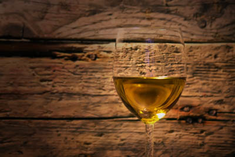
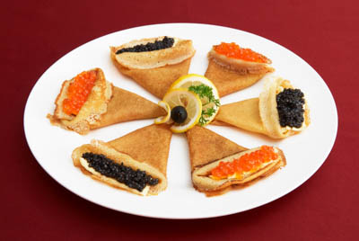
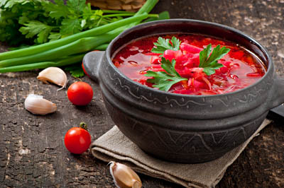

I det nordlige Kirgisistan består en væsentlig del af kostpyramiden af forskellige kålvarianter og nødder. Mama Dushku fandt på denne ret, som en hyldest til det røde flag med hammer og segl.

Down below you will find our tasty menu options.
For vegetarians:

 -49Dkk
-49DkkPavlova - russiske pandekager - i honningmelon fra Nordkorea
I det nordlige Kirgisistan består en væsentlig del af kostpyramiden af forskellige kålvarianter og nødder. Mama Dushku fandt på denne ret, som en hyldest til det røde flag med hammer og segl.

Et glas russisk hvidvin fra Chernobyl
Vores hvidvin er brygget på de helt særlige druer der voksede frem i den uberørte natur omkring Pripyat. Vinen fremstilles lokalt i området, druerne trampes af trænede bjørne, og filtreres gennem et system af stadigt mindre babushka-filtre inde i hinanden. Du får ikke en lignende vin noget andet sted!

- 79DkkBrændte pandekager med Bordyriske ørne-kaviar
Brændte pandekager med Bordyriske ørne-kaviar. Ørne laver kaviar på størrelse med peberkorn. Og de smager af kaviar. Ikke peber. Lækkert.

Murmanske bondeboller bagt i stenovn
Der er blevet sagt meget om det russiske køkken, men godt har sjældent været et af tillægsordene. Russisk tapas er dog lækkert. Inspireret af duften af Italien får du her tørret bøffelkød, hvidt brød og tomater badet i koldpresset olie. Aby włączyć obsługę czytnika ekranu, naciśnij Ctrl+Alt+Z. Aby uzyskać informacje o skrótach klawiszowych, naciśnij Ctrl+ukośnik.